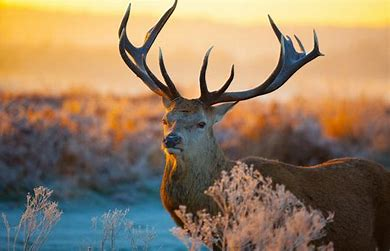

Nombre Completo: Annette Gpe. Blanco Kirkland

Los venados son mamíferos ungulados pertenecientes a la familia Cervidae. Son conocidos por sus elegantes cuernos ramificados, que son característicos de los machos adultos de muchas especies. Los venados se encuentran en todo el mundo, con especies que habitan una variedad de hábitats, desde bosques hasta praderas y montañas. Son herbívoros y se alimentan principalmente de hierbas, hojas, brotes y frutos. Los machos a menudo desarrollan cuernos durante la temporada de apareamiento, que utilizan para competir por el derecho a reproducirse con las hembras. Los venados juegan un papel importante en los ecosistemas como herbívoros, controladores de poblaciones vegetales y presas para depredadores.
La apariencia de los venados puede variar según la especie y la región, pero comparten algunas características comunes. Generalmente, los venados tienen cuerpos esbeltos y patas delgadas adaptadas para la carrera y el salto. Su pelaje varía en coloración y puede ser marrón, grisáceo o rojizo, con algunas especies que muestran manchas blancas en el vientre o en la parte trasera. Algunas especies tienen un patrón de pelaje más distintivo, como las manchas blancas en la cola o bandas de color en el cuerpo. Una característica distintiva de los venados machos adultos son sus cuernos ramificados, también conocidos como astas. Estas estructuras óseas se desarrollan anualmente y varían en tamaño y complejidad según la especie y la edad del individuo. Los cuernos se utilizan principalmente durante la temporada de apareamiento para competir con otros machos por el acceso a las hembras. En cuanto al tamaño, los venados pueden variar desde especies pequeñas, como el pudú, que mide alrededor de 30 centímetros de altura en la cruz, hasta especies más grandes, como el alce, que puede superar los dos metros de altura en la cruz y pesar varios cientos de kilogramos.
Razones por las que juegan un papel importante en el ecosistema:

Aqui podemos ver un poco mas acerca de los Venados:
En conclusión, los venados son una familia diversa de mamíferos ungulados que desempeñan roles importantes en los ecosistemas en los que habitan. Como herbívoros, controlan la vegetación y ayudan a mantener la biodiversidad de los hábitats naturales. Además, son una fuente vital de alimento para varios depredadores, lo que contribuye al equilibrio de las cadenas alimentarias. Su presencia y comportamiento también pueden influir en la dinámica de la vegetación y la regeneración forestal en algunos casos. Estas criaturas elegantes y majestuosas han fascinado a los seres humanos durante siglos y son apreciadas tanto por su belleza como por su importancia ecológica. Sin embargo, enfrentan amenazas como la pérdida de hábitat, la caza furtiva y los conflictos con humanos, lo que subraya la necesidad de conservar y proteger sus poblaciones para garantizar su supervivencia a largo plazo y la salud de los ecosistemas en los que viven.
Visita Facebook Ir a TwitterMas informacion sobre los Venados:
Nombre Completo: Annette Gpe. Blanco Kirkland